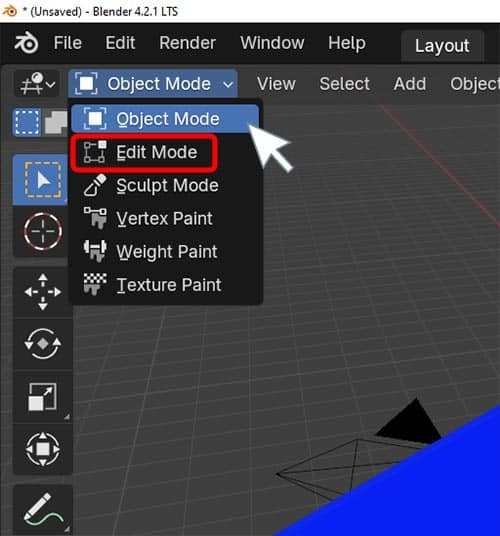
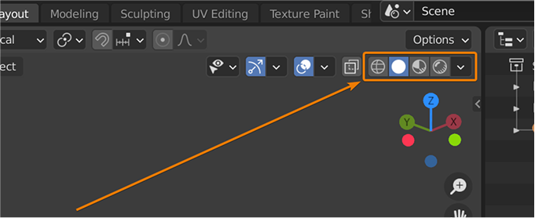
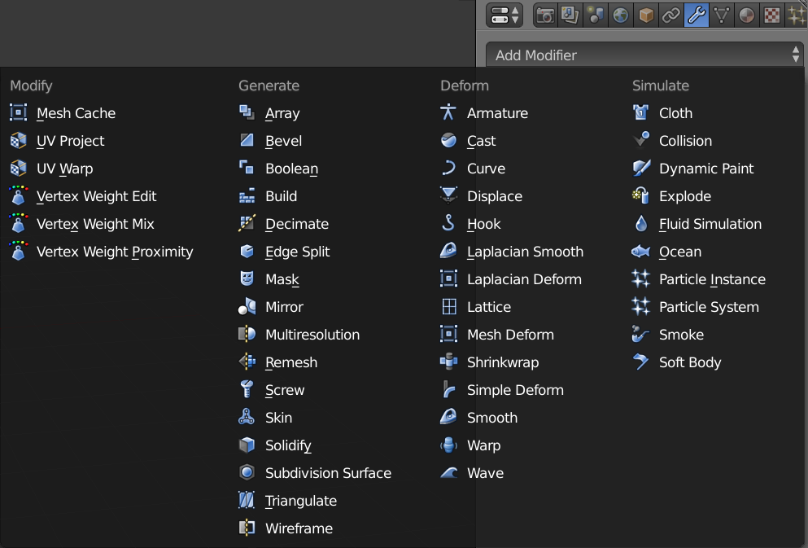
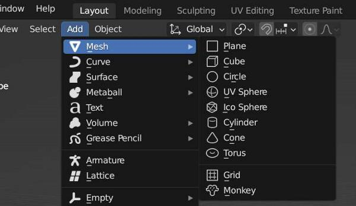
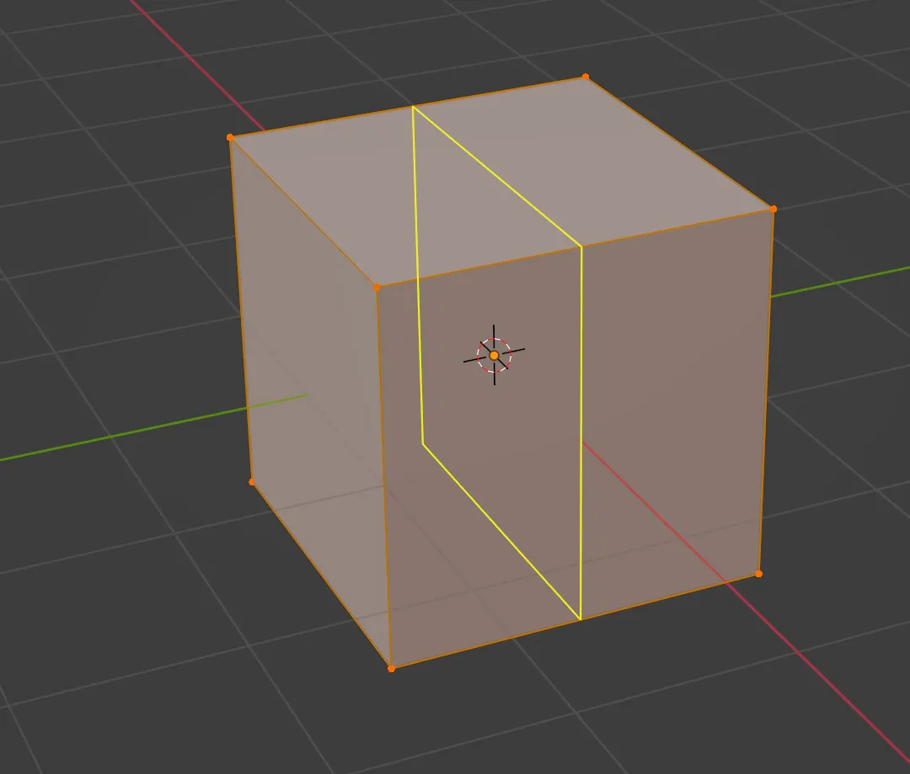
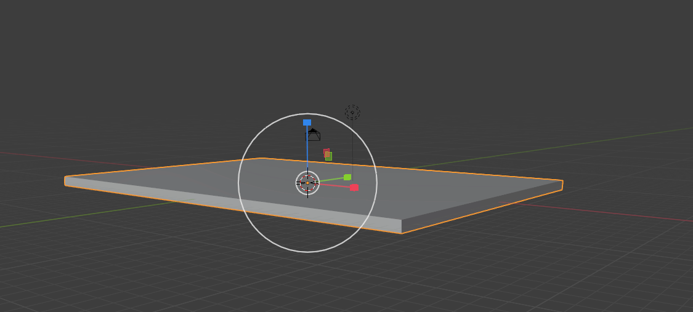

- Work Queue
- My Ticket
Create a Ticket for your problem
Your Problem
Description
Attachment
Image files such as jpg, jpeg, png and svg etc...
Drop your image here or click to upload
Image files such as jpg, jpeg, png and svg etc...
Drop your image here or click to upload
01:00:00
What does the "Knife Tool" allow you to do in Edit Mode?

Cut objects into separate parts
Slice through geometry to create new edges
Apply a Boolean modifier
Delete selected faces
What is the purpose of the "Loop Cut and Slide" tool?
To create UV seams
To add a new edge loop and position it
To duplicate geometry
To smooth the mesh
Which modifier is best for creating symmetrical models?
Subdivision Surface
Boolean
Mirror
Solidify
What does the "Subdivision Surface modifier do?"
Adds thickness to a mesh
Combines two meshes
Smooth and increases mesh resolution
Projects a mesh onto another
What is the difference between "Smooth Shading" and "Flat Shading"?

Smooth shading uses fewer polygons
Flat shading is only for wireframes
Smooth shading interpolates normals across faces
Flat shading adds a bevel
What does the "Bevel" modifier do?
Adds a curve to the mesh
Rounds off sharp edges or corners
Duplicates the mesh
Applies a texture
What is the function of the "Shrinkwrap" modifier?

Wraps a mesh in a UV map
Projects one mesh onto the surface of another
Compresses the mesh file
Applies a cloth simulation
What does "Proportional Editing" allow you to do?
Scale objects uniformly
Edit multiple objects at once
Transform vertices with a falloff effect
Apply modifiers proportionally
Which tool is used to move objects in Blender?

Scale tool
Rotate tool
Grab tool
Extrude tool
What is the purpose of the "Boolean" modifier?

To animate objects
To combine or subtract meshes
To unwrap UVs
To apply materials
What does the "Inset Faces" tool do?
Extrudes faces inward
Create a new face inside the selected faces
Deletes internal geometry
Adds a new edge loop
What is the benefit of using "Non-Destructive Modeling"?
It reduces file size
It allows changes without altering the base mesh
It improves render speed
It automatically UV unwraps the model
What does "Retopology" refer to in Blender?

Applying a texture
Creating a new mesh with better topology over an existing one
Rendering a scene
Baking lighting
What is the "Multiresolution" modifier used for?

To create multiple UV maps
To simulate cloth
To sculpt on different levels of detail
To animate bones
What does the "Edge Crease" affect in a Subdivision Surface modifier?
The color of the edge
The sharpness of the edge
The UV mapping
The lighting
What is the shortcut for "Extrude" in Edit Mode?

E
X
Shift + D
Ctrl + E
What does the "Decimate" modifier do?
Adds detail to a mesh
Reduces the number faces in a mesh
Duplicates the mesh
Applies a mirror effect
What is the purpose of "Snapping" in modeling?

To align objects to the grid or other elements
To animate objects
To apply textures
To bake lighting
Need help?